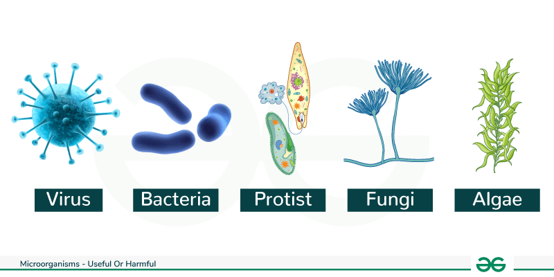

A microorganism, or microbe, is an organism of microscopic size, which may exist in its single-celled form or as a colony of cells. is an organism of microscopic size, which may exist in its single-celled form or as a colony of cells. is an organism of microscopic size, which may exist in its single-celled form or as a colony of cells. Because microorganisms include most unicellular organisms from all three domains of life they can be extremely diverse. Two of the three domains, Archaea and Bacteria, only contain microorganisms. The third domain Eukaryota includes all multicellular organisms as well as many unicellular protists and protozoans that are microbes. Some protists are related to animals and some to green plants. There are also many multicellular organisms that are microscopic, namely micro-animals, some fungi, and some algae, but these are generally not considered microorganisms. Microorganisms can have very different habitats, and live everywhere from the poles to the equator, deserts, geysers, rocks, and the deep sea. Some are adapted to extremes such as very hot or very cold conditions, others to high pressure, and a few, such as Deinococcus radiodurans, to high radiation environments. Microorganisms also make up the microbiota found in and on all multicellular organisms. Microbes are important in human culture and health in many ways, serving to ferment foods and treat sewage, and to produce fuel, enzymes, and other bioactive compounds. Microbes are essential tools in biology as model organisms and have been put to use in biological warfare and bioterrorism. Microbes are a vital component of fertile soil. In the human body, microorganisms make up the human microbiota, including the essential gut flora. The pathogens responsible for many infectious diseases are microbes and, as such, are the target of hygiene measures.
